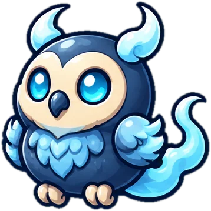

 Ghost
Ghost Wind
WindTap a stage to read its story.
Owlmist is a small, warm-brown owl fledgling with soft rounded wings and a glowing crescent moon symbol on its chest. Faint blue wisps trail from its wing feathers when it flies, giving it the look of a tiny candle moving through dark air. It perches near Ghost-hollow pathways that cut across Dragon Spire's lower slopes, and travellers who see its soft glow through the fog instinctively feel less afraid - which is exactly what it intends.
Field note: Owlmist always faces the direction from which the coldest draft is coming - it says it can smell when ghosts are near.
Dragon Spire. Owlmist and its family are found in the Dragon Spire. See everyone who lives there.
Share a Bond Food that matches its types to become friends. Owlmist loves:
A Bond Food is not a trick. It joins your spirit with the Kimuro's spirit, and only when it chooses you.
Print the Kimuro adventure packs: mazes, cards, a board game and Bond Mark medals.
See the printable packs